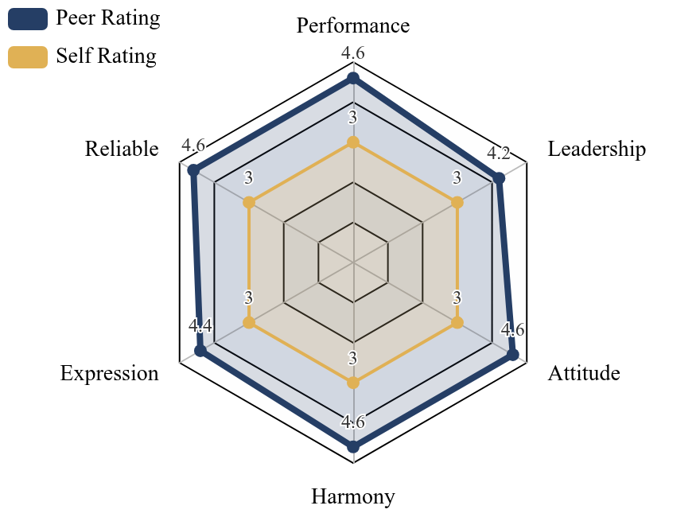
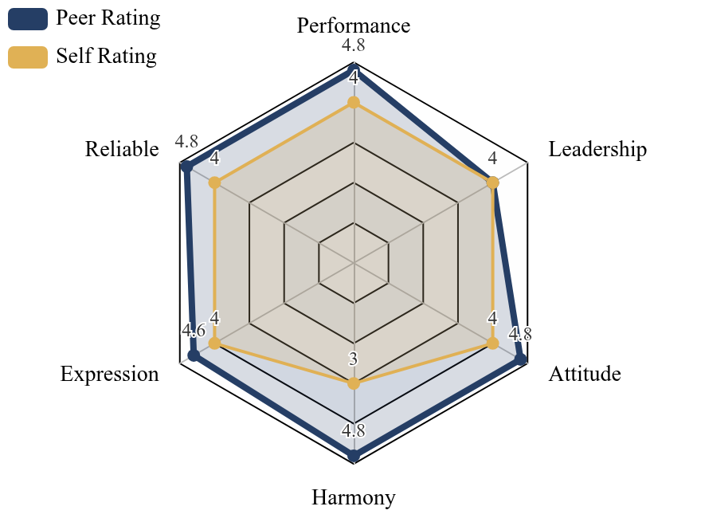
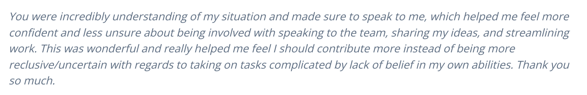
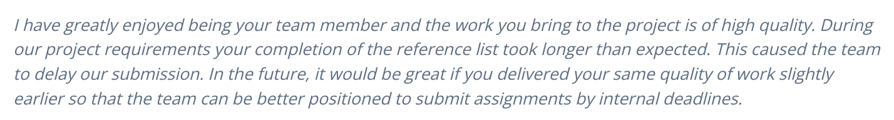
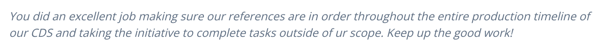

For example: defining "faster"
We benchmarked the client's own method. Scrubbing by hand takes about 7.8 hours per rock, so that became the number every design had to beat.
Engineering Strategies & Practice II · Jan – Apr 2026
Our client was scrubbing latex paint off painted rocks on a Lake Huron beach by hand. Our team of six designed a faster way to do it, without letting the paint end up in the lake.

Painted rocks keep piling up on a beach in Port Elgin. As the paint wears off, it releases microplastics into Lake Huron. Our client was collecting the rocks and scrubbing them clean by hand, which is slow, tiring, and creates paint-filled rinse water.
So we started by measuring the problem. We timed how long it took to scrub a 3 × 3 cm square on the client's sample rock with steel wool (17.17 seconds), then scaled it up to the rock's full surface area.
We brainstormed individually first, then in structured group sessions, and used morphological charts and SCAMPER, two idea generation methods we learned in class. That gave us 60 full solutions, from abrasive and thermal to chemical and biological. Then we narrowed them down step by step:
The final three were an ultrasonic cleaner, a poultice station, and a steel wool power drill attachment. The drill was chosen as our final design because it was the fastest, handled the biggest rocks, and produced the least hazardous waste.
One of the biggest things I learned in ESP II was how to quantify an objective. In conceptual design, you have to think ahead: once you have your ideas and early prototypes, how will you compare them against each other, and against the functions, objectives and constraints (FOCs) set by the client? So instead of comparing designs by feel, we gave every objective a number and a reason behind it, all documented in our design specification.
We benchmarked the client's own method. Scrubbing by hand takes about 7.8 hours per rock, so that became the number every design had to beat.
More objectives we turned into numbers
| Vague goal | Measurable target | Why that number |
|---|---|---|
| Clean well | > 90% of paint removed | The minimum removal efficiency suggested by the Royal Society of Chemistry |
| Little waste | ≤ 30 L of hazardous waste | More than 30 L needs multiple disposal containers in Port Elgin |
| Portable | < 23 kg | A weight most adults can lift safely |
| Quiet | < 50 dBA | Threatened bird species breed near the beach, and birds are the most noise-sensitive wildlife there |
I was our team's Research Coordinator. This was a really fun role because I love organization. My tasks included:
Twice during the term, teammates rated each other anonymously on six teamwork skills, on a scale from 1 to 5. Here's my feedback:


From my Team PLAYER peer feedback reports. Anonymous ratings out of 5; 4.5 and above counts as "Outstanding."
As my feedback shows, my teammates rated me "Outstanding" in five of six areas by April, up from four in March: performance, attitude, harmony, communication and reliability. I'm someone the team can count on to do high-quality work, on time, while keeping things running smoothly.
Teammate · April 2026
Teammate · March 2026
Teammate · April 2026

Teammate · April 2026
As these comments show, I care about the people side of teamwork as much as the work itself. I try to bring positive energy to our discussions and make sure everyone, especially quieter teammates, feels comfortable sharing their ideas.
Constructive criticism is how I become a better teammate and a more productive member of the team. Here's a comment I received earlier in the term, and what changed after it:


I had underestimated how long organizing references would take, and the whole team waited on me. So for our next report, I changed how I planned the task:
Everyone met the draft deadline, nothing needed reordering at the last minute, and we submitted that same night. My reliability score went from 4.6 to 4.8, and the task that held us back in March became something my teammates thanked me for.